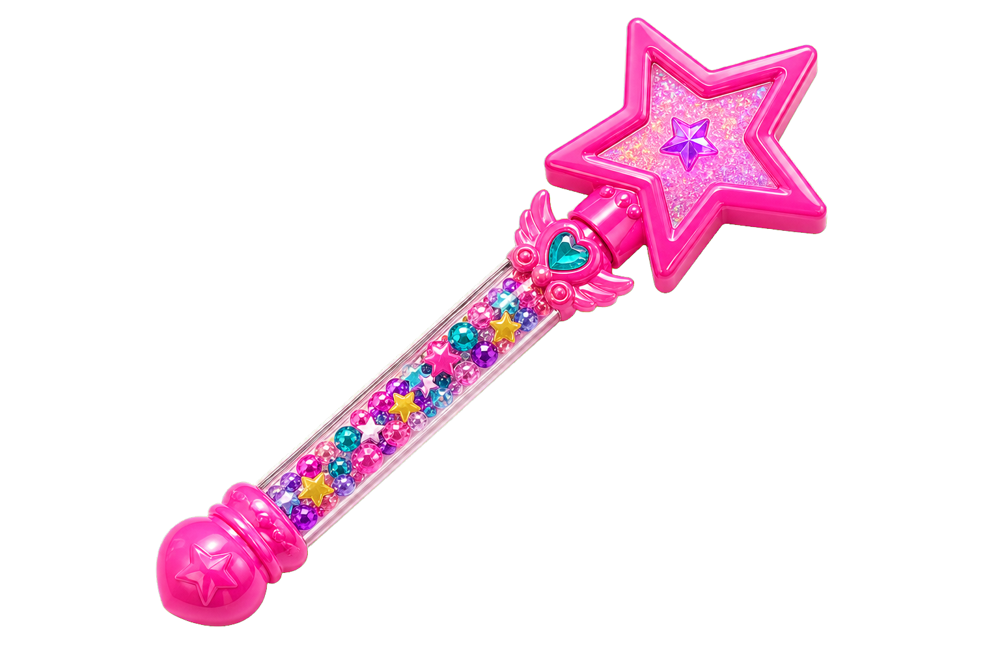
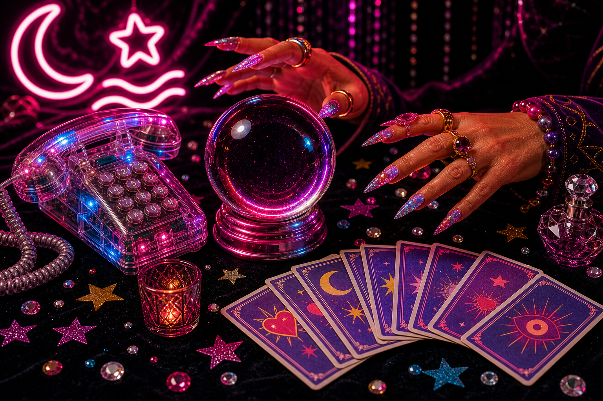
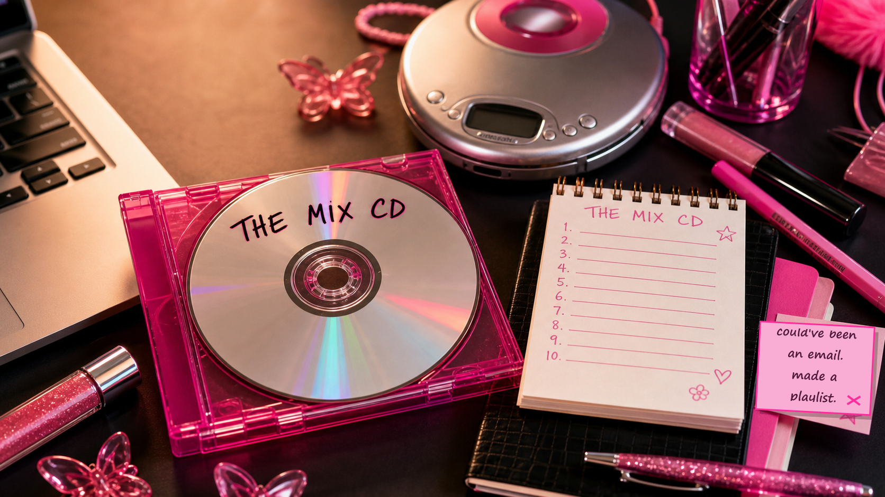

On Wednesdays We Use AI
The one in which she realizes AI is already being added to the invisible load, briefly says "ugh, as if," and then opens the tab anyway. Cher had a closet computer in 1995. We can start with ten minutes.
Read episode 1New episodes every Wednesday, obviously
Get in, loser. We're learning AI.

Twenty-four episodes, like the glory days when TV actually let you fall in love with the characters before cancelling them after eight. No bingeing. New episode every Wednesday. The arc: she stops feeling behind, learns to delegate to machines, keeps her standards, builds her squad, and becomes the woman other people come to when the future gets confusing.
Start Here
No one needs to tour the whole mall before buying the lip gloss. Read the newest episode, learn one term, enter the chat rooms, or take a five-minute detour through the fun shelf.
On This Episode...
Start at Episode 1, keep going every Wednesday, and let the season do what the best shows always did: turn a confusing world into characters, catchphrases, rituals, and a reason to come back next week. Unaired titles are working titles until the draft gets its lipstick, receipts, and final line edit.
The one in which she realizes AI is already being added to the invisible load, briefly says "ugh, as if," and then opens the tab anyway. Cher had a closet computer in 1995. We can start with ten minutes.
Read episode 1
The one in which she types something vague into ChatGPT, gets back absolute garbage, and discovers the problem was never the technology. It was the ask. The Spice Girls were right all along.
Read episode 2Hallucinations, verification, and why AI can sound like Regina George even when it is making things up.
ChatGPT vs Claude vs Gemini, without pretending product names explain the actual difference.
Companies, products, models, people, and which names you actually need to recognize in a meeting.
The AlphaFold, math-breakthrough, holy-shit moments that prove this is not just a fancier search box.
The lAIdies Room
Ask the messy question, drop the tiny win, request the reference, or leave the feedback before the whole thing becomes hallway folklore.
Post in one chat room to earn the Room Key sticker. Post in every chat room to earn the Every Room, No Notes merit badge.
Ask the Room
What are you trying to do, what tool are you using, and where is it going off the rails?
Enter this roomReceipts Desk
AI-assisted summaries of answered questions, unanswered asks, helpful tips, and anything that needs a human receipt-check before it becomes guidance.
Open the digestSend It Energy
Drop the prompt, workflow, tool, useful article, screenshot, or tiny trick that saved you from a blank doc spiral. Glossy is welcome; evidence is the standard.
Enter this roomThe Try-On Debrief
Tool used, task attempted, butterfly clip rating, and the one thing you learned. The messy attempts are useful. Especially those.
Enter this roomWins of the Week
Closed the loop, asked for the money, survived the meeting, made the deck better, left on time. We celebrate those too.
Enter this roomDear lAIdies
Office politics, wording the message, managing up, confidence wobbles, what to say when someone is being weird in a meeting.
Enter this roomPut It in the Burn Book
Nominate the 90s/Y2K show, movie, singer, band, snack, beauty product, or office object that deserves a future AI analogy.
Enter this roomMix CD Exchange
Drop the public playlist link, the scene it belongs in, and the three songs that explain the whole assignment.
Enter this roomComment Card
Too high-level, need more examples, loved the analogy, confused by the try-on? Drop the feedback before we keep walking in the wrong shoes.
Leave feedbackLevel Up
Terms, quizzes, faces, and the week's AI drama — all the reinforcement without the homework energy.
So You Don't Pull a Cher
A living dictionary for the words that show up when you start using AI more seriously. Plain English, useful analogies, no condescension, no R-words, no vests, no maxxing, and absolutely no pretending you were born knowing what a terminal is.

One card at a time, like an office Rolodex with better lip gloss.
What it is: AI that creates a new draft, image, summary, plan, or bit of code from your instructions.
Where it comes up: ChatGPT, Claude, Gemini, image tools, and most "make this for me" AI features.
Analogy: Not Google. More like an assistant making the first messy version so you are not staring at a blank page.
What it is: The instruction you give an AI tool.
Where it comes up: Anytime you type into ChatGPT, ask for an image, or tell Codex what to change.
Analogy: A brief with standards: audience, task, tone, context, and what good looks like.
What it is: When AI gives an answer that sounds polished but is wrong or made up.
Where it comes up: Names, dates, laws, links, quotes, sources, numbers, or anything high-stakes.
Analogy: Regina George confidence, zero receipts. Verify before you forward.
What it is: The trained system inside an AI product that predicts and generates the response.
Where it comes up: When people say GPT-5, Claude Sonnet, Gemini, or "which model are you using?"
Analogy: The app is the venue. The model is the person doing the work in the back room.
What it is: The background information AI needs to understand your situation.
Where it comes up: When the first answer is generic and you need to add audience, goal, constraints, examples, or documents.
Analogy: Telling your stylist the event, weather, dress code, and shoes before asking for the outfit.
What it is: A chunk of text an AI model reads and predicts with. A token can be a word, part of a word, punctuation, or a weird little text fragment.
Where it comes up: Token limits, pricing, long documents, context windows, and the viral "how many Rs are in strawberry?" problem.
Analogy: The model may not see strawberry as nine neat letters. It sees chunks. That is why an LLM can confidently say there are two Rs when there are three: it is predicting from pieces, not naturally counting letters like a spelling bee judge with receipts.
What it is: AI that can take multiple steps toward a goal, sometimes using tools along the way.
Where it comes up: Coding assistants, research agents, workflow builders, and tools that can plan, act, check, and revise.
Analogy: An assistant with a checklist. Useful, but still needs boundaries and review.
What it is: The app you use to open websites.
Where it comes up: Visiting ChatGPT, reading docs, testing your site, or checking whether a link works.
Analogy: Chrome, Safari, and Edge are the front doors. The website is what is inside.
What it is: The structure of a webpage: headings, paragraphs, links, forms, buttons, and images.
Where it comes up: When you want AI to create a page, fix newsletter HTML, or understand what is on a site.
Analogy: The bones of the outfit before hair, makeup, and accessories.
What it is: The styling rules for a webpage: layout, colors, fonts, spacing, and responsive behavior.
Where it comes up: When text spills out of boxes, buttons look wrong, or a page needs to work on mobile.
Analogy: Same content, better blazer. CSS is what makes it look intentional.
What it is: Code that makes a webpage interactive after it loads.
Where it comes up: Quote generators, filters, dropdowns, forms, calculators, and buttons that change what you see.
Analogy: HTML is the room, CSS is the decor, JavaScript is someone turning the lights on and moving the furniture.
What it is: A text-based place to talk to your computer by typing instructions instead of clicking app buttons.
Where it comes up: Starting a website preview, installing tools, running a script, or following developer setup instructions.
Analogy: The Starbucks counter. Apps are the printed menu. The terminal is where the off-menu options live, if you know how to order.
What it is: A Windows terminal shell: the thing that understands Windows-style commands and passes them to the right tool.
Where it comes up: On Windows when instructions say to run something, list files, start a server, or check a folder.
Analogy: The Windows barista/register system. It takes the order, checks what ingredients and machines exist on that computer, and either makes the drink or tells you why it cannot.
What it is: A typed instruction you give your computer in Terminal or PowerShell.
Where it comes up: Copying setup instructions, running tests, starting a local site, or asking AI what a command does before using it.
Analogy: The secret drink-menu order. It is not listed on the big friendly app menu, but if the ingredients are installed and you say it exactly right, you get precisely what you wanted.
What it is: The exact location of a file or folder on your computer.
Where it comes up: When you send AI a file location, upload assets, fix image links, or open a local HTML page.
Analogy: The full address, not "that cute place downtown."
What it is: The ending of a filename that tells your computer what kind of file it is.
Where it comes up: HTML newsletters, images, Markdown docs, PDFs, CSVs, and anything AI asks you to save or upload.
Analogy: The label on the garment bag: .html, .png, .md, .pdf.
What it is: A small piece of code that places another service inside your webpage.
Where it comes up: Comments, signup forms, videos, maps, calendars, surveys, and other tools you do not want to build from scratch.
Analogy: Borrowing the professional photo booth instead of constructing one in your living room.
Magazine Quiz
Pick any released issue and take the quiz whenever you get there. New readers can start at Episode 1, archive girls can catch up later, and high scores earn digital stickers for their lAIdies Card, not extra chores, money, or another tote bag.
Current sticker
No sticker yet Best score: not takenIssue 01 Quiz
Season quiz archive
Pick an issue above. The questions stay in the Caboodle until you open them.
Your quiz progress
Sign in with your Clubhouse Pass to keep scores and stickers on your member card.
Who's Who in the AI Group Chat
The glossary explains the words. This is the cast list: who made what, what you might use it for, and how to recognize the name when it wanders into a meeting wearing confidence.
The company behind ChatGPT. If someone says "the ChatGPT people," they usually mean OpenAI.
The general-purpose AI assistant most people try first. Good for drafting, brainstorming, summarizing, and getting unstuck.
The company behind Claude. Often discussed for safety, enterprise use, and models that are very good with long documents.
A strong writing, analysis, and document-heavy assistant. Think thoughtful editor with a giant reading pile.
The company behind Gemini, plus a very large amount of the internet's plumbing, advertising, search, cloud, and AI infrastructure.
Google's AI assistant family. Useful to know because it is showing up across Google products people already use.
The app is the handbag. The model is what is inside doing the work. Cute bag, important contents.
The Card Pack
Every Wednesday adds new cards to the collection. Pick an issue pack, get three random pulls, and yes, duplicates count. Late readers can start with Issue 1 and build the binder from the beginning.

New packs released every Wednesday.
Open your first pack. Duplicates are part of the drama.
Open a Clubhouse Pass to keep your card pulls saved across devices.
Latest pulls
Nothing in the wrapper yet. Open a pack and see what you pulled.
The Binder
Owned cards stay bright. Empty sleeves show what is still missing. Duplicates stack on the little pink count sticker.
The Cocktail Party Explanation
Prompting is not magic words. It is delegation. The more clearly you explain the task, audience, tone, constraints, and what "good" looks like, the less the AI has to guess. Vague prompt, vague output. David Rose would never.
Main Character Spritz
Build over ice in a rocks glass, top with Prosecco, and garnish with orange zest. Developed exclusively for lAIdies by Ryan C, our world's-best-bartender vote, at CHAR No.5 Whisky & Cocktail Lounge. Ask for Ryan and tell him Ali sent you.
What's in My Bag?
TLDR. But make it fetch.
The biggest AI stories of the week, explained like we are catching you up on the group chat you missed.
Biggest This Week
The government wants to preview AI models before you can. Trump signed an executive order giving federal agencies a 30-day sneak peek at powerful new AI models before they go public. It’s voluntary — no one’s getting blocked — but the vibe is clear: the bouncer wants to see the guest list before the doors open. They’re mostly worried about AI-powered hacking, not AI taking your job. For now.
Read the receiptAnthropic’s AI is now training itself. Yes, like that. Anthropic announced their AI systems are writing code for other AI systems — a recursive improvement milestone. Think: the intern who got good enough to onboard next year’s interns without supervision. Not dystopia territory yet, but it means AI labs are speeding up because the AI itself handles more of the engineering grunt work.
Read the receiptOpenAI shipped a million-line product without writing a single line of code. Their team built an entire product using only AI coding agents. The humans didn’t code — they designed the environment the AI works in. It’s called harness engineering, and the takeaway is almost too on-brand for us: the model is talented, but the real magic is how you set up the room. Cher didn’t pick outfits randomly. She built the closet computer first.
Read the receiptAn AI tax system processed 7,000 returns at 97% accuracy. OpenAI and Thrive launched a system that learns from accountant corrections in real time — like an associate who actually remembers the feedback you gave them last quarter. It saved a third of prep time per return. The future of professional work isn’t AI replacing you. It’s AI that gets better because of you.
Read the receiptFun & Games
Start in the Clubhouse when you want always-on tools, open the week's fun pack for article-specific practice, and end in the DJ Booth when the work needs a soundtrack.
Weekly Kits
Choose a released pack and the tray below loads that issue's quiz, cards, try-on, printables, and article takeaways. Late readers can start at Issue 1 without hunting.
Always Open
The always-open room: AI can help you learn, make useful work rituals, and build playful tools that still have a job. Your Clubhouse Pass, advice fixtures, games, music, and weekly packs all connect back to practice.
Open the Compact
Click open, then use the room like a map: weekly packs live in the top shell, permanent activities live in the bottom room, and the sticker controls stay easy to tap on a phone.
Closed compact: Open the pink Clubhouse to pick a weekly pack or permanent room fixture.


Create your Clubhouse Pass to save what you earn, build your lAIdies Card, and make it easier to connect with other lAIdies when you are ready to share.
The pass remembers what you have tried. The card turns that into a fun, useful intro for the room: what lane you work in, where you are with AI, what you want to learn, and where you might be able to help. For now, members connect through the LinkedIn or website link they choose to share; direct chat can come later.

Earned badges fill in. Locked ones keep a dotted outline so your member card makes it clear what is still missing.
Quiz stickers fill in as you earn them. Trading cards keep their full missing-sleeve binder in the card pack section.
Badges, stickers, card pulls, and quiz progress belong on your member card. Sign in so the good stuff follows you.
We sent the email. Open it from the same device to finish your Clubhouse Pass.
Still no email? Check spam/promotions and wait a few minutes. Do not request another email right away, because repeat sends may be temporarily blocked.
Clubhouse Pass saves your email, profile answers, and rewards like stickers, badges, and trading cards. Sharing your lAIdies Card is encouraged, optional, and approval-based. Privacy and terms.
Ready? Finish here after you choose any answers you want.
Your Clubhouse Pass keeps everything in one place — stickers, badges, card pulls, and quiz scores.
After Hours
The permanent playlists and DJ JAIDY's weekly custom AI tracks live together here, separate from the article pack so the music always has a home.
Tap or wave the wand to open the full LAIDY advice console below.

Open LAIDYPull a glossy little closer for the end of the episode, the thread, or the group chat.
Generate oneSpin for one small work dare. Low stakes, less carrying the same task around all week.
The coven has a reservation at 7. Choose your lane, pick a mood, and open your drink fortune.
 Open the fortune teller
Open the fortune teller
Issue 02 pack loaded: quiz, specificity cards, try-on, prompt cheat sheet, and article takeaways.
Rip open a Wednesday pack. Maybe you get the card you needed. Maybe you get three of the same one. Iconic.
Open the packMatch the analogy to the AI concept and earn a digital sticker for your lAIdies Card.
Take the quizUse one real, low-risk work explanation to test ChatGPT, Claude, and Gemini side by side.
Open the matching printables for the first issue: the quick prompt cheat sheet and the Issue 1 practice printable.
Pull the cards for better asks: specificity, Girl Power prompting, try-on practice, rewrite remix, and receipts.
Open Issue 2 cardsTake the Tell Me What You Want quiz and prove the Spice Girls lesson stuck: AI needs the ask, not your hopes and vibes.
Take Issue 2 quizTake one vague ask and make it painfully useful: task, audience, context, standards, constraints, and one good example.
Use the prompt cheat sheet as the no-drama checklist before you ask AI for anything important.
Ask the crystal ball for a career/life reading. Practical advice, late-night-commercial drama.

Call now for your readingMadame CLAI-O is on the line. Pick up for your card, message, and next move.
One booth for the weekly custom AI song, the Spotify playlists, and the community mix-CD energy.
Draw a question card for work drama, ambition, confidence, or group-chat honesty.
 Draw a card
Draw a card
Dial a number, hear the advice, and maybe find the unlisted number that unlocks a secret badge.
 Open Dream Phone
Open Dream Phone
The Club Scene
Buffy had The Bronze. Charmed had P3. Half the best 90s and 2000s episodes somehow ended up in a club with live music, low lighting, and a song you immediately needed to know. lAIdies gets the same treatment: playlists for the workday, member mix CDs, and DJ JAIDY's weekly episode tracks.
Spotify holds the songs. This page holds the liner notes, the Wednesday drops, and the reason the mix belongs here.


The House DJ
DJ JAIDY makes AI songs, sits on the AI steering committee, and has been cheering this whole thing on from the control booth. He is turning each Wednesday episode into its own club-scene track, because apparently the newsletter needed liner notes, a recurring venue, and someone emotionally prepared to DJ while the receipts load.
Send DJ JAIDY's photo when you have it, and this becomes his 2000s house-DJ trading-card portrait.
Tracklist Ready
For the walk from "why am I nervous?" to "I have the receipts." The opening-credit strut before the conference room scene.
Tracklist Ready
For cutting the filler, fixing the first line, and refusing to send beige. Editing montage, but make it actually useful.
Live Spotify Mix
For soft focus, big feelings, and the kind of work session where the pink pen is doing emotional support. Very "the band at The Bronze understood me."
Live Spotify Mix
For the full teen-drama hallway walk: soft eyeliner, spiral notebook, and the song playing while everyone pretends not to look back.
Tracklist Ready
For after the call, when the meeting was a lot and the notes need lipstick. Roll credits, but first: open the action items.
Community Mix CDs
Share your Spotify mix, add the liner notes, or put in a request for DJ JAIDY: give him the inspo, pick the 90s/Y2K style, and tell us when to press play.
New mix CDs and House DJ tracks can drop with Wednesday episodes, so the club scene keeps changing without turning the homepage into a jukebox nobody maintains.
Ask LAIDY
LAIDY is not pretending to be Miranda, Elle, Dolly, Cher, Sophia, Buffy, or David. She just keeps their energy in the Caboodle and gives you a nudge when you need one. Ask her a question, pick the energy, and let her be lovingly direct.
Tell me what is happening, choose the energy, and I will give you the version with better lighting. No 2026 Vanity Fair Oscars after party light-mare here.
After each answer, LAIDY will tell you whether your ask gave enough context to be useful.
Review the current issueThe lAIdies Challenge
Dolly did not build Dollywood by waiting for permission. And she definitely did not take a 40-hour course first.
Steal the line, improve it, post yours publicly. We're trAIlblazers here.

Make Dolly proud
The winning "Remember, lAIdies:" line gets featured in the next episode, with credit. Dry, specific, and a little too true usually wins.
Submit in the weekly threadThe Power Suit Playbook
These are self-serve prompts, not newsletter assignments. Spin the board when you have five spare minutes and want one tiny dare that makes the work a little less stuck.

Five-Minute Try-On
A rotating bank of quick work dares, confidence moves, useful prompts, and tiny tasks for the admin nonsense that eats your calendar.
The Reference Closet
Mean Girls and Clueless can only carry so much luggage. The reference closet should keep rotating so the series stays fresh, widely recognizable, and painfully specific.

Pick a drawer or search the closet. The whole wardrobe stays tucked away until you need it.
Screen
Cher's closet computer, pattern matching, taste, context, and the eternal warning not to confuse output with judgment.
Screen
Question-led framing, career overthinking, skills debt, and the occasional useful spiral over drinks.
Screen
Fighting the scary thing before you feel fully trained. Useful for overwhelm, courage, and "I am no AI Slayer" humility.
Screen
Spin-off perspective, moral ambiguity, chosen teams, and doing the repair work after the dramatic mess.
People & Characters
9 to 5, cups of ambition, practical optimism, permissionless building, and making work feel human without making it small.
Screen
Underestimated competence, evidence, confidence, and the woman who reads the room better than the room reads her.
Screen
Executive standards, impossible asks, cerulean-level context, and why vague work gets dismissed in two words.
Music
Independent women, bills paid, standards high, AI used strategically. Not dependence. A tool you control.
Music
Women-led creative ecosystem, shared stage power, and proof that the lineup can be the strategy.
Music
Precise ache, notebook honesty, structured intensity, and women refusing to sand off the emotional truth.
Music
Cheerful group-pop optimism, bring-it-all-back energy, and making participation feel like part of the hook. Also findable as S-Club 7.
Music
Harmonized roles, big chorus confidence, synchronized teamwork, and larger-than-life energy without losing the individual parts.
Music
Precision choreography, clean handoffs, assembled strengths, and knowing when the group is tighter than the solo. Also findable as N-Sync.
Screen
Execution, credit, originality, and the problem with copying someone else's routine without understanding the work.
Screen
Competence in heels, tactical polish, and the difference between being underestimated and being unprepared.
People & Characters
Reinvention, performance pressure, comeback energy, and knowing when the first draft needs a choreographer.
Accessories
Tiny, addictive, instantly nostalgic. Perfect for ratings, quick tips, and "small sips, big moves" moments.
Accessories
Proof that tone, brevity, and audience awareness mattered before anyone called it prompt engineering.
Accessories
The resource hub metaphor. Tools, prompts, receipts, and emergency glitter in one organized place.
Accessories
Suspended-dot novelty, weird texture, transparent proof of concept, and the reminder that memorable does not always mean repeatable.
Accessories
Photo-label personalization, indie corner-store cool, unusual flavors, and making the package feel like part of the message.
Print & Pages
Editorial judgment, hierarchy, taste, ruthless cuts, and why the best output still needs a strong editor.
Print & Pages
Identical-twin contrast, glossy teen-drama stakes, social sorting, and the reminder that similar inputs can still read very differently.
Screen
Businesswomen's special energy, reinvention, friendship, and the confidence to walk in like you invented Post-its.
Screen
Record-store work crew, found family, one-day mission energy, and saving the shop without pretending anyone has a perfect plan.
Screen
Community advice, story-first wisdom, and proof that one good table can solve more than most strategy decks.
Screen
Social hierarchy, reputation, reinvention, and the drama of everyone having an opinion before they have the facts.
Screen
Small lessons, exaggerated schemes, group dynamics, and learning the thing before the bell rings.
Screen
Appointment-viewing ritual, family-sitcom ensemble rhythm, wholesome chaos, and making learning feel like a recurring Friday-night hang.
Screen
School-on-a-cruise-ship premise, teen ensemble logistics, forced proximity, and learning while the whole environment keeps moving.
Screen
Email tone, online identity, inbox tension, and why charming correspondence still needs a point.
Screen
Longing as signal, timing, public vulnerability, and trusting that the right message still needs the right channel.
Screen
Women helping women, intuition with receipts, and making the scary thing feel survivable.
Screen
Coven energy, outsider confidence, power with consequences, and the reminder that aesthetics are not a substitute for judgment.
Screen
Mission-statement clarity, relationship business, "show me the money" negotiation energy, and knowing when the client actually wants fewer, better words. Also findable as Jerry McGuire.
Screen
Messy drafts, honest self-assessment, diary-as-data, and turning the imperfect running commentary into useful evidence.
Screen
Ensemble storylines, airport feelings, grand gestures, messy message delivery, and the reminder that many small threads can still make one emotional system.
Screen
Preppy manipulation, social strategy, weaponized charm, and the reminder that clever games still have consequences.
Screen
Secrets with receipts, consequence chains, group accountability, and the warning that buried context keeps coming back.
Screen
Chain reactions, ignored warning signs, brittle plans, and the reminder that risk hides in the handoffs.
People & Characters
Direct voice, anti-polish polish, and not sanding off the point just because the room got corporate.
People & Characters
Twin-brand empire, direct-to-girls media, matching-but-not-identical positioning, and building a whole world out of highly specific audience understanding.
People & Characters
Closet computer energy: taste, pattern matching, and the reminder that a good system still needs judgment.
People & Characters
Question-led framing, voice, and turning the spiral into one sentence worth reading.
People & Characters
Executive standards, ruthless edits, and why vague work does not survive the walk to the elevator.
People & Characters
Plainspoken wisdom, zero patience for fluff, and advice that starts with the actual problem.
People & Characters
Evidence, confidence, and the woman who reads the room better than the room reads her.
People & Characters
Doing the scary thing before you feel fully trained, then finding the people who help you carry it.
People & Characters
Specificity, taste, and refusing beige output just because someone called it "professional."
Accessories
Roll-on glitter, tiny rhinestones, butterfly clips, and the reminder that the details can change the whole outfit.
Accessories
Oversized mall-rack bravado, motivational intensity, and the funny gap between slogan confidence and actually doing the work.
Accessories
Curation, sequencing, energy shifts, and the perfect soundtrack for turning scattered ideas into a usable set.
Accessories
Messy discovery, peer-to-peer access, mislabeled files, and the reminder that free can still come with risk.
Accessories
Popping out the music deck so nobody stole it, tiny security rituals, and the reminder not to leave the valuable part exposed.
Accessories
Care-and-feeding, maintenance, and the reminder that agents, workflows, and tiny digital responsibilities get dramatic when ignored.
Accessories
Newsboy hats, trucker hats, layered polos, lace-trim tanks, hip belts, low-rise flare jeans, platform sneakers, jelly sandals, baby tees, chokers, belly-button piercings, helix piercings, and the difference between a signal and a strategy.
Gimme, Gimme More
New episode every Wednesday. No bingeing. No practice that takes longer than your coffee order. Just a really fun way to learn AI with women who are all figuring it out together.
The Origin Story
Six months ago, I could not get a Women-in-Tax newsletter to send properly via email. I work in tax, not tech. I am not a developer. The ideas were there, but they kept getting stuck behind someone else's time, budget, or availability.
Then I started using AI. Since then, I have built a personal command centre, designed AI agents for research and operations, entered a Women-in-Tax hackathon with a team that built Echo, an AI product VPs now want to bring to production, made amazing lAIdies friends, and created the newsletter, website, images, and brand you are looking at now.
Before this, I had never designed a website or built anything like it. I am also, historically, one of IT's most frequent flyers. My portrait is probably hanging somewhere as Customer of the Year, and when I bring IT a problem, they often have to go find their IT. At this point, it is only a matter of time before the imaginary loyalty department calls to offer me a very special valued-customer discount if I come back.
With AI, the idea stopped waiting for a traditional tech on-ramp. In under three weeks, the vision became a newsletter, website, visual system, quiz archive, games, agents, issue packs, and a public room people can actually use.
I am writing and building lAIdies myself, but it did not come out of nowhere. Sara Baxter and Eugina Lim helped turn the lonely "am I crazy for wanting this?" stage into an actual room: reviewing drafts, giving feedback, cheering on the weird ideas, and helping prove through Echo that women in tax can build the future instead of waiting for someone else to translate it.
DJ JAIDY has been cheering from the AI steering committee side of the house, and now he is bringing the music: weekly AI-made songs for each episode, because apparently this project needed a House DJ too.
lAIdies is not asking you to become the IT department in better shoes. It is here to remind you that you are allowed to understand this stuff, and you absolutely can. Learn enough of the technical pieces to stop feeling locked out, then use that confidence to bring the really good ideas to life in your own voice.
P.S. In case it was not clear, I do not have it all figured out just yet. I have one hand in my pocket and the other writing an AI prompt. If you spot a problem, have a better idea, or know a shortcut I should try, tell me. We are all in this together, preferably with better snacks.
The Founding Group Chat
That is the promise of lAIdies: small weekly tries, a useful room, and enough confidence to stop waiting for someone else to translate your idea.
Created the newsletter, website, visuals, and public room after getting tired of waiting for a traditional tech on-ramp.
Early reviewer, feedback giver, Echo hackathon teammate, and one of the women who made the idea feel worth building out loud.
Echo was Eugina's idea. She is one of Amazon Tax's AI experts, an Echo hackathon teammate, and part of where this whole thing is going next.
AI steering committee supporter, AI song maker, and the person turning each Wednesday episode into something you can play while pretending your inbox is under control.
After Hours
Follow for visual drops, behind-the-scenes bits, and the occasional post worth sending to the group chat. Bring questions and wins to the public threads; bring the outfit check energy here.

@we.are.laidies
Go after hours